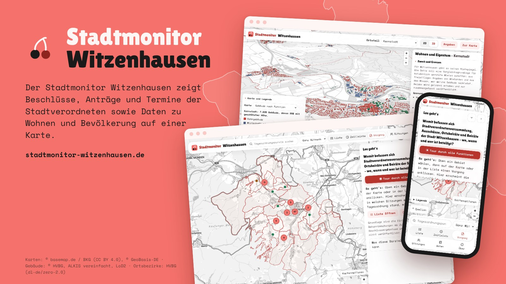
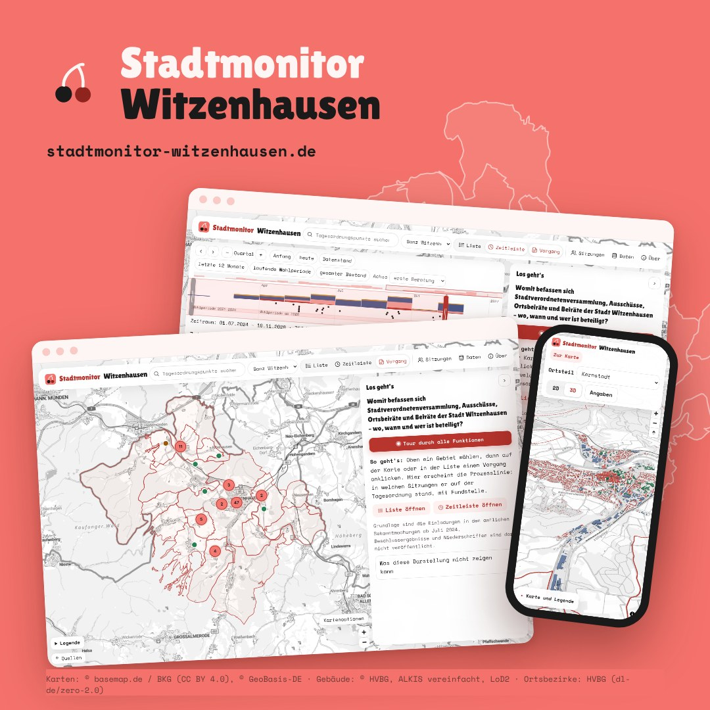
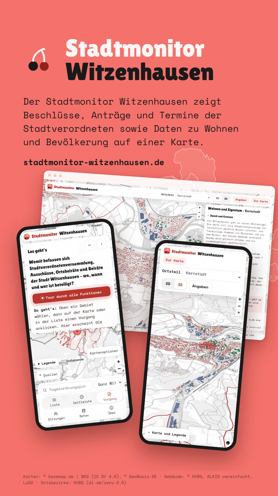
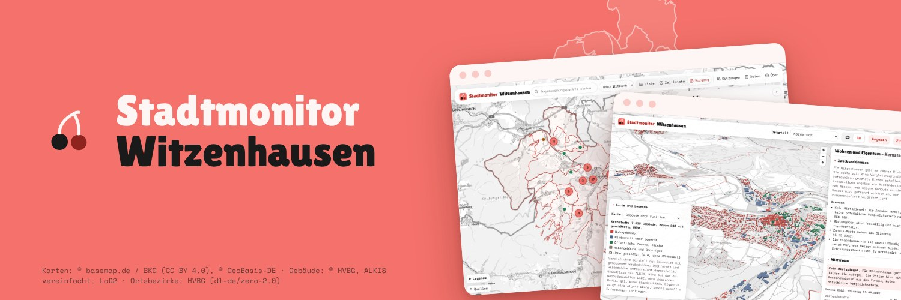
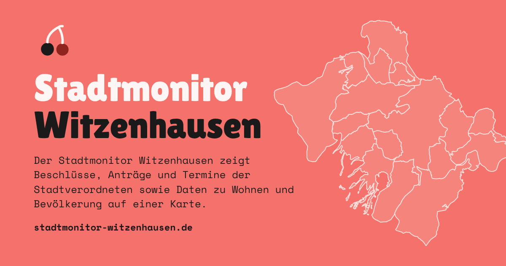

Teilen
Sie möchten auf den Stadtmonitor hinweisen? Hier finden Sie Bilder in den gängigen Formaten, die Wort- und Bildmarke und einen kurzen Text. Alles darf frei verwendet werden, um auf den Stadtmonitor aufmerksam zu machen. Bitte schneiden Sie die Quellenzeile in den Bildern nicht ab.
Link teilen
Der Stadtmonitor Witzenhausen zeigt Beschlüsse, Anträge und Termine der Stadtverordneten sowie Daten zu Wohnen und Bevölkerung auf einer Karte. https://stadtmonitor-witzenhausen.de/
Die Links öffnen das jeweilige Programm erst beim Anklicken; diese Seite bindet keine fremden Dienste ein.
Bilder für Beiträge

Quer 1600 × 900
Beiträge in sozialen Netzwerken, Präsentationen, Newsletter



Quadratisch 1080 × 1080
Instagram, Mastodon, Beiträge im Feed



Hochkant (Story) 1080 × 1920
Storys und Status bei Instagram, WhatsApp, Signal



Banner 1500 × 500
Profil- und Titelbilder, Kopfzeilen


Vorschaubild für Links

Vorschau 1200 × 630
Erscheint automatisch, wenn jemand den Link teilt. Auch geeignet für Websites und Pressemitteilungen.

Wort- und Bildmarke


Text zum Mitnehmen
Der Stadtmonitor Witzenhausen zeigt, was die Stadtverordnetenversammlung, die Ausschüsse, die Ortsbeiräte und die Beiräte beraten: auf einer Karte, einer Zeitleiste und als Liste, mit Quellenangabe zu jedem Punkt. Dazu kommen Strukturdaten der Ortsteile und eine Seite zu Wohnen und Eigentum. Ein nichtkommerzielles, offenes Projekt: https://stadtmonitor-witzenhausen.de/
Bildbeschreibung (Alt-Text) für die Motive:
Stadtmonitor Witzenhausen: Ansichten der Seite auf Computer und Handy, mit der Karte der Ortsbezirke, der Zeitleiste der Beratungen und den Gebäuden der Kernstadt in 3D.
Quellen
Die Bilder zeigen Kartengrundlagen Dritter: Karten © basemap.de / BKG (CC BY 4.0), © GeoBasis-DE; Gebäude © Hessische Verwaltung für Bodenmanagement und Geoinformation (HVBG), ALKIS vereinfacht, LoD2; Ortsbezirke HVBG (dl-de/zero-2.0). Die Quellenzeile steht in jedem Bild. Weitere Angaben: Datenquellen.